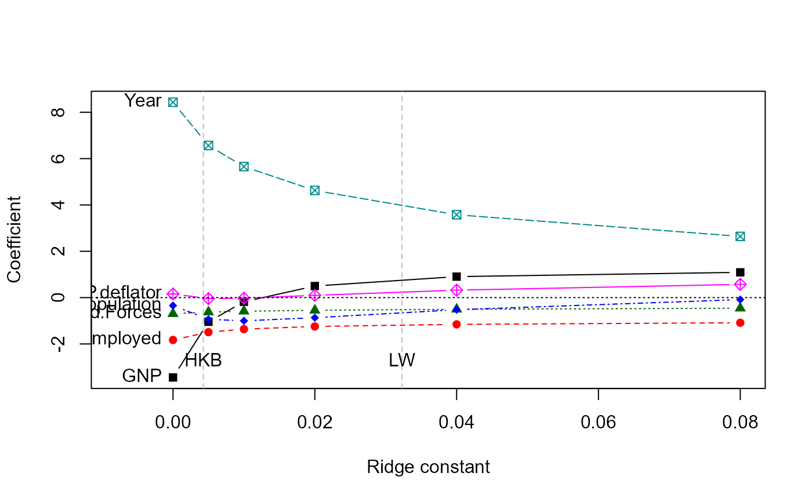
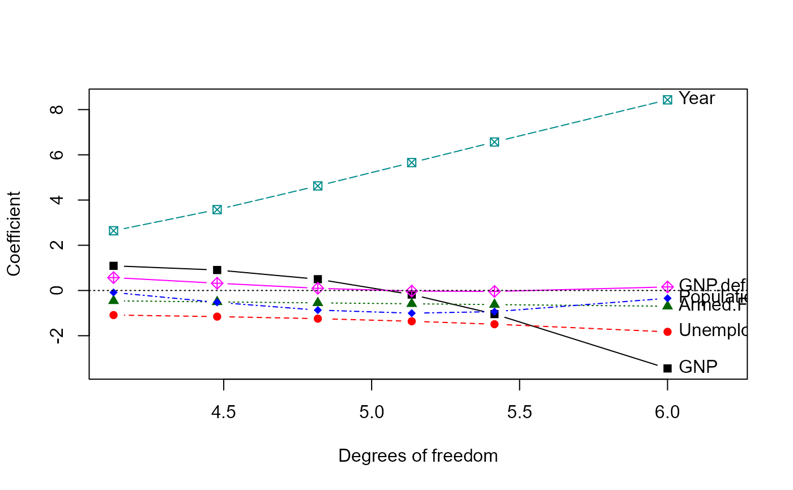

The traceplot function extends and simplifies the univariate ridge
trace plots for ridge regression provided in the plot method for
lm.ridge
Arguments
- x
A
ridgeobject, as fit byridge- X
What to plot as the horizontal coordinate, one of
c("lambda", "df")- col
A numeric or character vector giving the colors used to plot the ridge trace curves. Recycled as necessary.
- pch
Vector of plotting characters used to plot the ridge trace curves. Recycled as necessary.
- xlab
Label for horizontal axis
- ylab
Label for vertical axis
- xlim, ylim
x, y limits for the plot
- ...
Other arguments passed to
matplot
Details
For ease of interpretation, the variables are labeled at the side of the
plot (left, right) where the coefficient estimates are expected to be most
widely spread. If xlim is not specified, the range of the X
variable is extended slightly to accommodate the variable names.
References
Friendly, M. (2013). The Generalized Ridge Trace Plot: Visualizing Bias and Precision. Journal of Computational and Graphical Statistics, 22(1), 50-68, doi:10.1080/10618600.2012.681237, https://www.datavis.ca/papers/genridge-jcgs.pdf
Hoerl, A. E. and Kennard R. W. (1970). "Ridge Regression: Applications to Nonorthogonal Problems", Technometrics, 12(1), 69-82.
See also
ridge for details on ridge regression as implemented here
plot.ridge, pairs.ridge for other plotting
methods
Examples
longley.y <- longley[, "Employed"]
longley.X <- data.matrix(longley[, c(2:6,1)])
lambda <- c(0, 0.005, 0.01, 0.02, 0.04, 0.08)
lridge <- ridge(longley.y, longley.X, lambda=lambda)
traceplot(lridge)

#abline(v=lridge$kLW, lty=3)
#abline(v=lridge$kHKB, lty=3)
#text(lridge$kLW, -3, "LW")
#text(lridge$kHKB, -3, "HKB")
traceplot(lridge, X="df")
